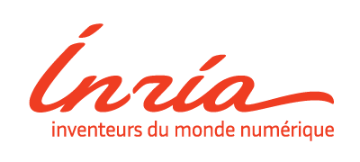

Open source · Python
Geomstats
geomstats.ai · core contributor · 1.5k★ on GitHub · with Stanford & Inria
What it is. Geomstats is a Python package for computations, statistics, machine learning and deep learning on manifolds. It splits into a geometry module (manifolds, Lie groups, fiber bundles, shape spaces and Riemannian metrics) and a learning module (statistics and learning algorithms for data that lives on curved spaces), running on NumPy, Autograd or PyTorch backends.
What I did. I joined as one of the early core contributors (3rd contributor to the project) and focused on bringing geometric structure to real data and models:
- Implemented and validated data representation on manifolds, mainly graph-structured data.
- Developed learning methods for complex-system models, including simple, timed and hybrid automata, cast on geometric structures.
- Contributed to the core geometry/learning APIs and their test coverage across backends.